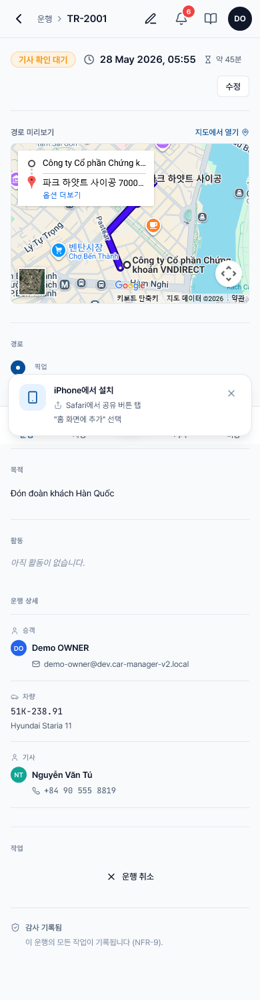

새 운행 확인 / 거절
- 시기
- 관리자가 새 운행을 배정하면 푸시 알림과 이메일을 받게 됩니다
- 기한
- 엄격한 기한은 없지만, 빠르게 응답할수록 일정이 맞지 않을 때 관리자가 다른 기사에게 재배정하기 쉬워집니다
- 결과
- 수락 시 → 해당 운행이 본인에게 "확정"됩니다 · 거절 시 → 관리자가 알림을 받고 다른 기사를 배정합니다
확인 방법
1
푸시 알림을 통해 앱을 열거나, 내 운행 탭으로 이동해 "기사 확인 대기" 라벨이 붙은 운행을 찾습니다.
2
해당 운행을 탭해 상세 화면을 열고 다음 항목을 꼼꼼히 확인합니다.
- 출발지와 도착지 — 지도가 함께 표시됩니다
- 출발 시각과 예상 소요 시간
- 승객과 운행 목적
- 배정된 차량 (번호판, 모델)

3
운행을 맡을 경우 "✓ 수락" 버튼(초록색)을 탭합니다. 맡을 수 없을 경우 "✗ 거절" 버튼(빨간색)을 탭하면 시스템이 거절 사유 입력을 요구합니다.
4
수락하면 운행 상태가 "확인 완료"로 바뀌고, 관리자와 승객에게 알림이 발송됩니다. 해당 운행은 오늘 화면의 운행 중 배너 또는 "오늘 중" 영역에 표시됩니다.
거절해야 하는 경우
| 상황 | 거절 권장 여부 |
|---|---|
| 휴가 또는 정기 건강검진 일정과 겹침 | ✅ 권장 — 사유를 명확히 기재 |
| 배정된 차량이 고장 나 시동이 걸리지 않음 | ✅ 권장 — 관리자에게 다른 차량 재배정 요청 |
| 경로가 익숙하지 않아 부담스러움 | ❌ 비권장 — 관리자에게 문의하거나 GPS 사용 |
| 출발 시각이 근무 교대 시간보다 너무 이르거나 늦음 | ✅ 권장 — 관리자가 일정을 조정하거나 다른 기사를 배정 |
⚠️
거절 사유는 감사 로그에 기록되며 관리자가 확인합니다. 구체적이고 정중하게 작성하세요. "모름" 또는 "안 함" 같은 표현은 피해야 합니다.